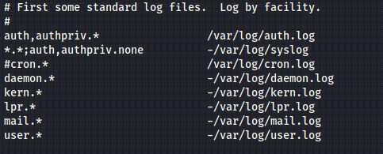

Log editing
To cover his tracks an attacker can the logs associated with his actions
• Main Log files configuration can be found on
◇ /etc/syslog.conf
◇ /etc/rsyslog.conf
• logs in /var/log usually are written in ASCII and can be edited with a text editor.
◇ /var/log/secure
◇ /var/log/messages
◇ /var/log/httpd/error_log
◇ /var/log/httpd/access_log
• Shell History $HOME/.bash_history
◇ To edit it kill the shell, so that it cannot write the most recent shell history, including the command used to edit it
unset HISTFILE; kill -9 $$